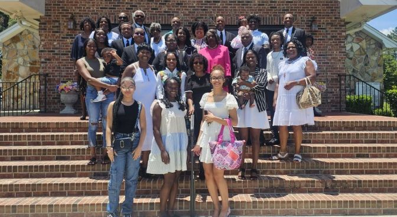
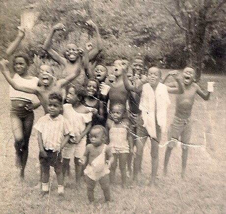
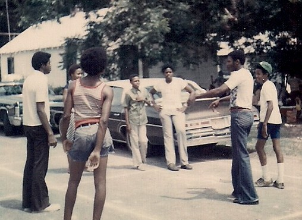

2009

2014

2024


It started on a humid July afternoon in a small Florida town, the kind where the air smells faintly of magnolia blooms and barbecue smoke. The occasion was simple enough: little Tony was turning 3, and his Mom wanted to make it special. They set up folding tables in Big Momma’s backyard, strung pastel streamers from the oak tree, and borrowed extra chairs from the church down the road. Nothing fancy—just a homemade cake, a few coolers of lemonade, and enough fried chicken to feed whoever happened to show up.
No one expected everyone to show up. At first, it was just immediate family—aunts, uncles, and a handful of cousins. But word travels fast in Southern families, and faster still when there’s food involved. Before long, second cousins from Cottondale arrived unannounced, followed by a great-aunt who hadn’t been seen in years, trailing behind her a station wagon full of nieces and neighbor children who “didn’t have anything better to do.” By mid-afternoon, the backyard buzzed with laughter, overlapping conversations, and children chasing each other barefoot through the dirt.
Someone had a camera. Someone else brought homemade sweet potato pies. And when the sun began to dip low, casting golden light through the trees, the party shifted into something warmer, deeper—something that felt less like a birthday and more like belonging. Tony, sugar-smeared and sleepy, barely noticed the transformation. But the adults did.
They lingered long after the candles were blown out. Stories were told—old ones, the kind that grow richer with each retelling. They remembered grandparents long gone, swapped recipes, teased each other about childhood mischief. People who hadn’t spoken in years found themselves side by side, laughing like no time had passed at all. As the last guests trickled out that evening, Tony’s grandmother leaned back in her chair, fanning herself with a paper plate. “Well,” she said, half to herself, “we ought not wait for another birthday to do this again.” And that was the seed.
The next year, Tony turned four—and this time, invitations were sent out properly. Not just to close relatives, but to the whole extended web of kin stretching across counties and state lines. This time, people planned ahead. They brought lawn chairs, coolers, hamburgers, hotdogs, and folding tables of their own. The yard wasn’t quite big enough anymore, so the gathering spilled into the side lot and beneath the old oak by the road. It was still Tony’s birthday— but it was also something new.
Uncle Randy organized a Spades tournament. The teenagers set up a volleyball net across the driveway. The elders claimed a shady corner and began the slow, steady rhythm of storytelling again. And just like before, the food multiplied: smoked ribs, deviled eggs, cornbread, collard greens, and cakes of every kind imaginable. By the time the candles came out that evening, everyone knew this wasn’t just about one little boy anymore.
Years passed, as they do. Tony grew older, his birthday cakes changing from cartoon characters to simple buttercream. But the gathering only grew larger. People began referring to it simply as “the reunion,” even though technically it still marked Tony’s birthday each summer. Family members rearranged work schedules and vacations to make sure they could attend. Some came from as far as Texas and Georgia. Babies were introduced to the fold, elders were honored, and empty chairs were remembered with moments of reflection and shared stories.

Traditions formed without anyone quite planning them. The same rhythm and blues songs were played every year. The same recipes reappeared, each one tied to a particular person. There was always a group photo in front of Big Momma’s house, with cousins shifting positions as the years passed—some growing taller, others disappearing, new ones added in. Tony, once the reason for it all, became more of a symbol—living proof of how something small could bring people together.
By the time Tony turned eighteen, the gathering had long outgrown the backyard. That year, they rented the shelter at the local park. There were banners, a proper stage for music, even matching T-shirts printed with the family name and the year. But despite the changes, the heart of it remained the same.
At dusk, after the meal and the music, Tony stood quietly at the edge of the crowd, watching as his family laughed, talked, and moved around one another with easy familiarity. His grandmother—older now, slower, but still sharp—joined him. “Funny, isn’t it?” Tony said softly. “All this… from one little party.” His grandmother smiled, eyes crinkling with memory. “Sugar,” she replied, “that party didn’t grow into this. This was always here. We just needed a reason to gather it up.”
And so each summer, without fail, they returned—to the food, the stories, the music, and the simple joy of being together. What began as a child’s birthday had become something more enduring than any one occasion: a living tradition, rooted deep in Southern soil and sustained by love, memory, and the quiet understanding that family, when given a reason, will always find its way back home.